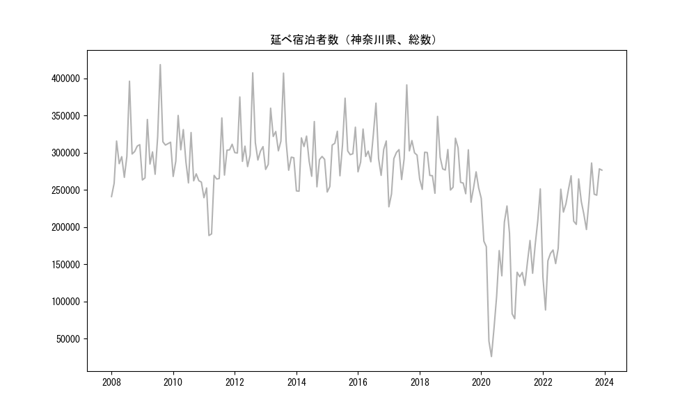
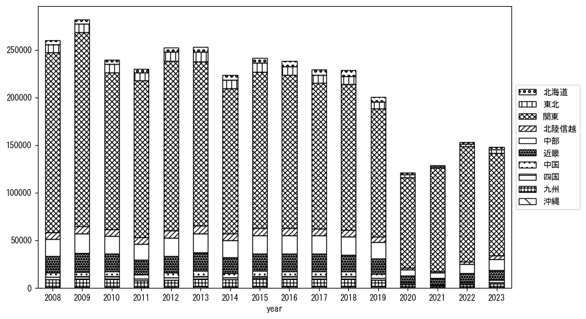
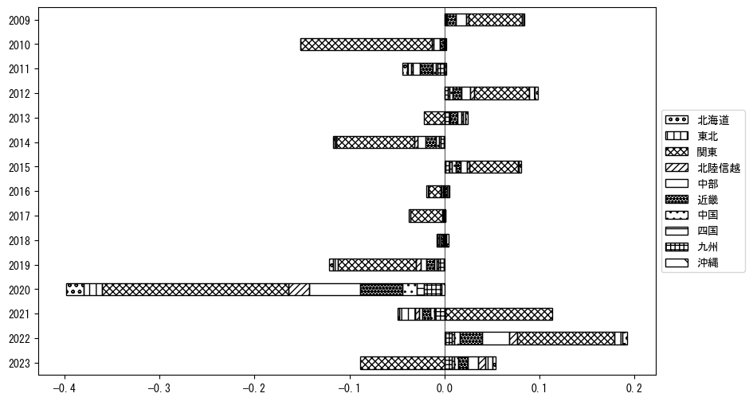
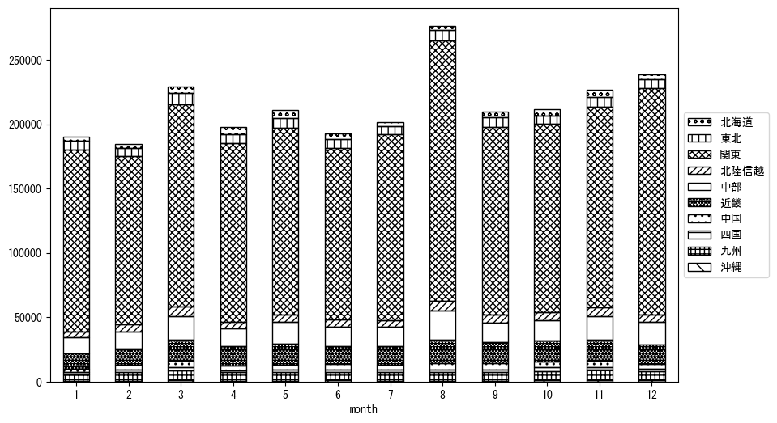
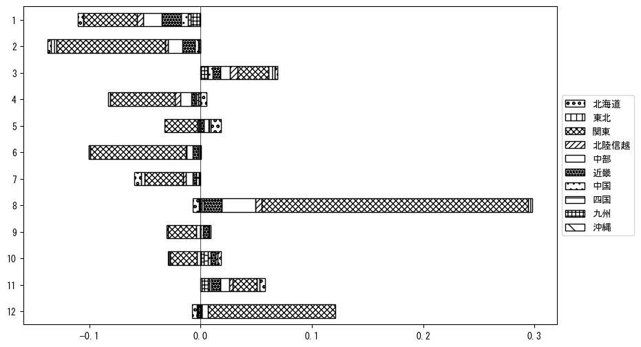

-
トップ
-
神奈川県
神奈川県
１．延べ宿泊者（総数）の推移
時系列グラフ

図１：神奈川県内の従業員数100人以上の宿泊施設での延べ宿泊者数（国外、居住地不詳を含む総数）。
基本統計量
表１：従業員数100人以上の宿泊施設での延べ宿泊者の総数（国外、および居住地不詳を含む）に関する基本統計量。単位は人。平均は１か月あたりの平均値を表す。図１に対応。
| 2008年 |
297,688 |
38,347 |
240,976 (1月) |
396,091 (8月) |
| 2009年 |
310,102 |
42,079 |
263,254 (1月) |
418,376 (8月) |
| 2010年 |
289,312 |
31,684 |
259,334 (7月) |
350,034 (3月) |
| 2011年 |
267,119 |
46,669 |
188,576 (3月) |
346,717 (8月) |
| 2012年 |
314,188 |
37,712 |
281,234 (6月) |
407,357 (8月) |
| 2013年 |
314,548 |
37,676 |
276,363 (10月) |
406,941 (8月) |
| 2014年 |
289,689 |
30,478 |
248,157 (2月) |
341,846 (8月) |
| 2015年 |
303,154 |
34,994 |
247,056 (1月) |
373,239 (8月) |
| 2016年 |
304,230 |
27,137 |
269,481 (10月) |
366,576 (8月) |
| 2017年 |
294,171 |
40,472 |
227,216 (1月) |
391,117 (8月) |
| 2018年 |
283,412 |
28,196 |
245,332 (7月) |
348,752 (8月) |
| 2019年 |
267,453 |
27,564 |
233,367 (9月) |
319,403 (3月) |
| 2020年 |
147,118 |
71,454 |
25,797 (5月) |
238,529 (1月) |
| 2021年 |
149,971 |
49,209 |
76,652 (2月) |
251,273 (12月) |
| 2022年 |
187,801 |
55,630 |
88,416 (2月) |
268,881 (12月) |
| 2023年 |
240,624 |
30,676 |
196,639 (6月) |
286,070 (8月) |
２．宿泊者数の重心（年平均の推移）
図２：神奈川県内の従業員数100人以上の宿泊施設での宿泊者数（国外、居住地不詳を除く）の重心（年平均の推移）。
全画面表示
重心の前年平均からの移動距離と方位、および緯度・経度
表２：重心の前年平均からの移動距離と方位、および緯度・経度。図２に対応。
| 2008年 |
— |
— |
35.6590 |
138.7364 |
| 2009年 |
南南東 |
1.0km |
35.6506 |
138.7409 |
| 2010年 |
西 |
12.1km |
35.6701 |
138.6091 |
| 2011年 |
東 |
12.1km |
35.6643 |
138.7421 |
| 2012年 |
西北西 |
4.1km |
35.6843 |
138.7042 |
| 2013年 |
西 |
8.0km |
35.6968 |
138.6174 |
| 2014年 |
北北東 |
2.4km |
35.7163 |
138.6278 |
| 2015年 |
西南西 |
4.8km |
35.6998 |
138.5784 |
| 2016年 |
北東 |
0.3km |
35.7018 |
138.5802 |
| 2017年 |
西 |
4.3km |
35.6958 |
138.5329 |
| 2018年 |
東北東 |
2.1km |
35.7037 |
138.5541 |
| 2019年 |
南南東 |
1.2km |
35.6942 |
138.5601 |
| 2020年 |
東南東 |
38.5km |
35.5693 |
138.9569 |
| 2021年 |
東 |
16.1km |
35.5662 |
139.1344 |
| 2022年 |
西北西 |
13.7km |
35.6060 |
138.9916 |
| 2023年 |
西 |
22.2km |
35.6342 |
138.7489 |
運輸局別延べ宿泊者数
時系列（年平均）

図３：神奈川県内の従業員数100人以上の宿泊施設での１か月あたり平均宿泊者数（国外、居住地不詳を除く）の運輸局別内訳。
寄与度（前年からの変化率に対する）

図４：神奈川県内の従業員数100人以上の宿泊施設での運輸局別宿泊者数（国外、居住地不詳を除く）から求めた寄与度。
３．宿泊者数の重心（月別）
図５：神奈川県内の従業員数100人以上の宿泊施設での宿泊者数（国外、居住地不詳を除く）の重心（月別）。観測期間は2008年1月から2023年12月まで。
全画面表示
全期間（2008年1月～2023年12月）の平均と月別平均の比較
表３：全期間の平均から月別平均までの移動距離と方位、および緯度・経度。図５に対応。
| 全期間 |
— |
— |
35.6633 |
138.7135 |
| 1月 |
東 |
15.9km |
35.6842 |
138.8868 |
| 2月 |
南南西 |
2.4km |
35.6449 |
138.6991 |
| 3月 |
西 |
5.4km |
35.6686 |
138.6537 |
| 4月 |
北東 |
5.1km |
35.7012 |
138.7454 |
| 5月 |
北北東 |
8.1km |
35.7343 |
138.7349 |
| 6月 |
西 |
4.9km |
35.6679 |
138.6599 |
| 7月 |
南南西 |
7.1km |
35.6048 |
138.6821 |
| 8月 |
東南東 |
11.6km |
35.6290 |
138.8341 |
| 9月 |
西 |
4.3km |
35.6595 |
138.6658 |
| 10月 |
西 |
10.1km |
35.6698 |
138.6023 |
| 11月 |
西 |
9.4km |
35.6721 |
138.6107 |
| 12月 |
南東 |
8.0km |
35.6232 |
138.7867 |
運輸局別延べ宿泊者数
月別平均（2008年1月～2023年12月）

図６：神奈川県内の従業員数100人以上の宿泊施設での宿泊者数（国外、居住地不詳を除く）の運輸局別内訳（月別）。
寄与度（全期間の平均から月別平均への変化率に対する）

図７：神奈川県内の従業員数100人以上の宿泊施設での運輸局別宿泊者数（国外、居住地不詳を除く）から求めた寄与度（月別）。
４．データのダウンロード
出典：観光庁「宿泊旅行統計調査」に収録された「施設所在地別、居住地別延べ宿泊者数（従業員数100人以上の施設）」
国土地理院「白地図（地理院タイル）」（図２と図５）